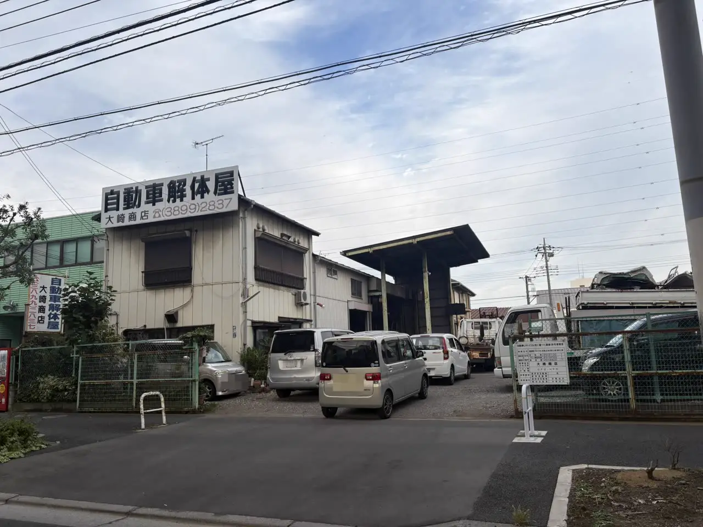

お店が2つあって迷っている方へ
環七店と入谷店、どちらに行けばいい？
大崎商店の2つのお店の使い分け
公開
こんにちは、東京都足立区江北で自動車解体・廃車買取をしている「大崎商店 環七店」です。
「大崎商店には、お店が2つあるけれど、どちらに電話すればいい？」
「車を持ち込むなら、環七店？入谷店？」
「動かない車は、どこへ持っていけばいいの？」
お店が2つあると、はじめての方は、どちらに連絡すればいいのか、迷うことがあります。この記事では、大崎商店の2つのお店の使い分けを、「こんなときは、どちら？」の形で、やさしくご紹介します。
① 店舗が複数あるお店を使うときに、確認したいこと
廃車や車の引き取りを頼むお店では、受付の場所と、解体する場所が分かれている場合があります。依頼する前に、次の点を確認すると安心です。
- 相談・受付は、どこへ連絡するのか（電話番号、受付時間）
- 車を持ち込むときは、どの店舗・どの場所へ行けばいいのか
- 動かない車は、どう運ぶのか（引き取りに来てもらえるのか、持ち込み先はどこか）
- 店舗ごとの、営業日と受付時間の違い
- 来店の前に、連絡が必要か
お店によって、対応は異なります。気になる点は、事前に、確認してください。
② 大崎商店の2つのお店の役割

大崎商店は、2つのお店で、役割を分けています。
| 比較する点 | 環七店（江北） | 入谷店（入谷） |
|---|---|---|
| 主な役割 | お問い合わせ・引き取りの受付、中古車・中古部品・タイヤの販売 | 自動車の解体（解体業の許可を受けた店舗） |
| 電話 | 03-3854-4141 | 03-3899-2837 |
| 受付時間 | 月〜土 10:00〜18:00 | 月〜土 9:30〜17:30 |
| 休業日 | 日曜・祝日 | 日曜・祝日・第2土曜 |
2つのお店は、車で約15分（目安）の距離です。お店の紹介や、写真は、大崎商店ってどんなお店？の記事、またはお店の紹介のページをご覧ください。
③ こんなときは、どちらへ？
| こんなとき | 連絡・持ち込み先 |
|---|---|
| 廃車や買取の相談をしたい（はじめて・不安なとき） | 環七店へ、お電話ください。引き取りのご依頼やご相談は、環七店が、スムーズです |
| 車の引き取りに来てほしい | 環七店へ、お電話ください。足立区内は、引き取り無料です。積載車で、車のある場所まで伺います |
| 車検が残っていて、安全に自走できる車を、持ち込みたい | 環七店が基本です。日時は、事前にお電話で、ご相談ください |
| 解体を前提とする車・自走できない車を、持ち込みたい | 入谷店が基本です。事前に、お電話でご相談ください |
| 動かない車（不動車）を、運びたい | 事前に日時をご相談のうえ、レッカーで、入谷店へ直接搬入していただくこともできます。引き取りも、ご相談ください |
| 中古車・中古部品・タイヤを、買いたい／タイヤ交換をしたい | 環七店（販売は、環七店で行っています） |
| バッテリーを、持ち込みたい | 環七店・入谷店の、どちらでも、お持ち込みいただけます。種類・個数を、事前にお電話でお伝えください |
| 車の部品を、持ち込みたい | 入谷店でも、受け付けています。対象となる部品は、お電話でご相談ください |
| 古いタイヤを、処分したい | 環七店・入谷店の、どちらでも、お持ち込みいただけます。来店前に、一度お電話ください |
| 解体の作業を、見学したい | 作業場が危険なため、見学は、基本的にお受けしていません |
車の受け渡し先は、お電話で話がまとまっていれば、どちらの店舗でも対応できます。販売や作業の場所は、上の表を目安に、目的に合わせて確認してください。迷ったときは、まず環七店へ、お電話ください。ご相談などは、お電話がスムーズです。お店に直接お越しいただいても、対応できる人がいない可能性があります。
④ 入谷店には、動かない車を運べます

入谷店は、車を解体する場所です。エンジンがかからない車、事故で動かなくなった車は、事前に日時をご相談のうえ、レッカーで、入谷店へ直接、搬入していただくこともできます。
- 電話の受付は、営業時間内です。入谷店は、月〜土 9:30〜17:30、日曜・祝日・第2土曜は、お休みです
- 車の引き取りの依頼は、環七店へのお電話が、スムーズです
- 解体費用・手続き代行費用・印紙代は、別請求しません
- 車のお持ち込みは、どこからでも歓迎です（基本は環七店。日時は、事前にお電話でご相談ください）

⑤ お電話の前に、知っておいてほしいこと
- ご相談などは、お電話がスムーズです。環七店は、引き取りなどで外出していることが多く、入谷店も作業中のため、直接お越しいただいても、対応できる人がいない可能性があります。ご来店の前に、お電話ください。お電話いただければ、受け入れの可否や、ご案内できる日時をお伝えします
- 日曜・祝日は、両店ともお休みです。入谷店は、第2土曜も、お休みです
- 日曜・祝日に、フォームやメールをいただいた場合は、翌営業日に、お返事します
- 車のご相談では、車種・年式・車の状態・車のある場所を、お伺いします。車検証を、お手元にご用意ください。所有者・使用者と、ローンが残っているかも確認します
- 環七店への行き方：最寄り駅は、日暮里・舎人ライナー 西新井大師西駅です。バスは、「上沼田団地入口」バス停（江北3丁目）から、西新井行・王子行・赤羽行があります
- 入谷店への行き方・持ち込み後の帰り道：最寄り駅は、日暮里・舎人ライナー 舎人公園駅です。地図・駅からの経路をご確認ください。バスを利用する場合は、「入谷町」停留所から、赤26で赤羽駅東口方面へ、川04などで川口元郷駅経由・川口駅東口方面へ行けます。店舗から停留所までの経路と、行き先に合った乗り場・時刻は、国際興業バスの公式案内でご確認ください
お店の場所は、お店の紹介のページの「地図を見る」から、ご確認ください。タイヤ・バッテリーの持ち込み料金や方法は、古いタイヤ・バッテリーを処分したいの記事もご覧ください。
よくある質問
Q. はじめてです。環七店と入谷店、どちらに電話すればいいですか？
A. 環七店へ、お電話ください。「廃車について聞きたい」とお伝えいただければ、スタッフがご案内します。
Q. お店に直接行っても、相談できますか？
A. ご相談などは、お電話がスムーズです。直接お越しいただいても、対応できる人がいない可能性があるため、ご来店の前に、お電話ください。
Q. 車を持ち込むなら、どちらですか？
A. 車検が残っていて、安全に自走できる車は、環七店が基本です。解体を前提とする車や、自走できない車は、入谷店が基本です。ご相談は、事前に環七店へお電話ください。
Q. 動かない車は、どうすればいいですか？
A. 引き取りに伺う方法のほか、事前に日時をご相談のうえ、レッカーで入谷店へ直接搬入していただく方法もあります。足立区内は、引き取り無料です。
Q. 解体の作業を、見せてもらえますか？
A. 作業場が危険なため、見学は、基本的にお受けしていません。
Q. 日曜や祝日は、対応していますか？
A. 日曜・祝日は、お休みです。入谷店は、第2土曜も、お休みです。
お車のご相談は、大崎商店へ
電話で相談する 03-3854-4141メールで相談する（フォーム）ご来店の前に、お電話ください。引き取りなどで外出していることもあり、お電話いただければ、受け入れの可否や、ご案内できる日時をお伝えできます。
大崎商店 環七店
電話：03-3854-4141
〒123-0872
東京都足立区江北7丁目1−3
営業時間：月〜土 10:00〜18:00
休業日：日曜・祝日
環七沿い／舎人ライナー
西新井大師西駅
大崎商店 入谷店
電話：03-3899-2837
〒121-0836
東京都足立区入谷7丁目5−11
営業時間：月〜土 9:30〜17:30
休業日：日曜・祝日・第2土曜
引き取りやご相談のお電話は、環七店がスムーズです。お電話の際は、「廃車について聞きたい」とお伝えください。
※掲載の写真は、実際の大崎商店（環七店・入谷店）で撮影したものです。